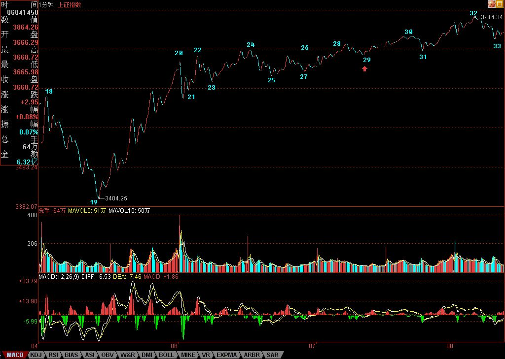
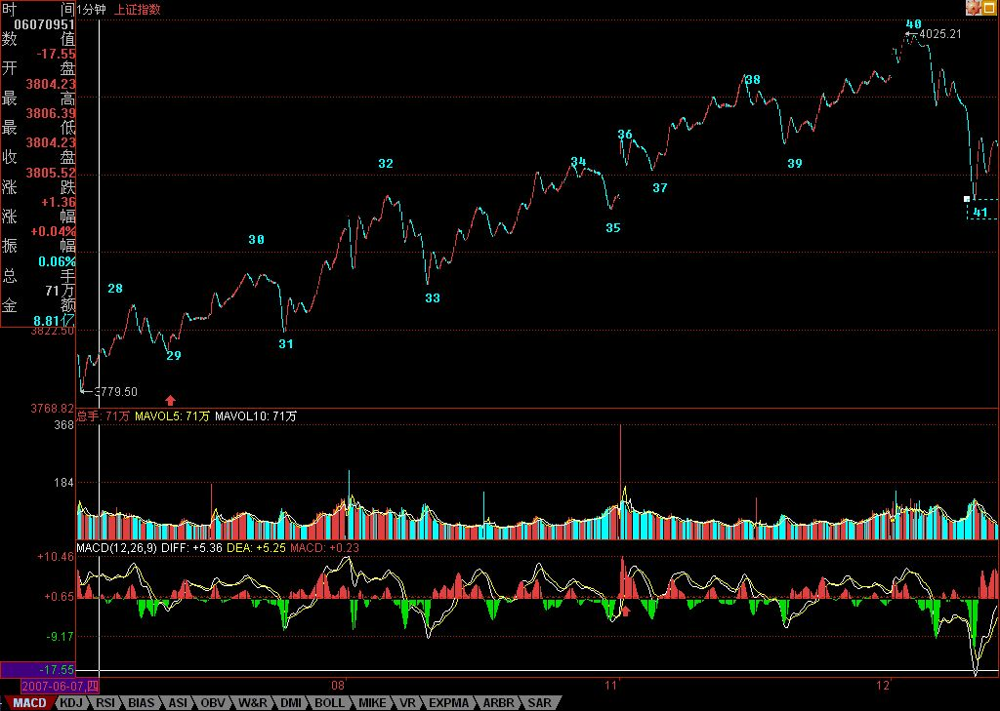
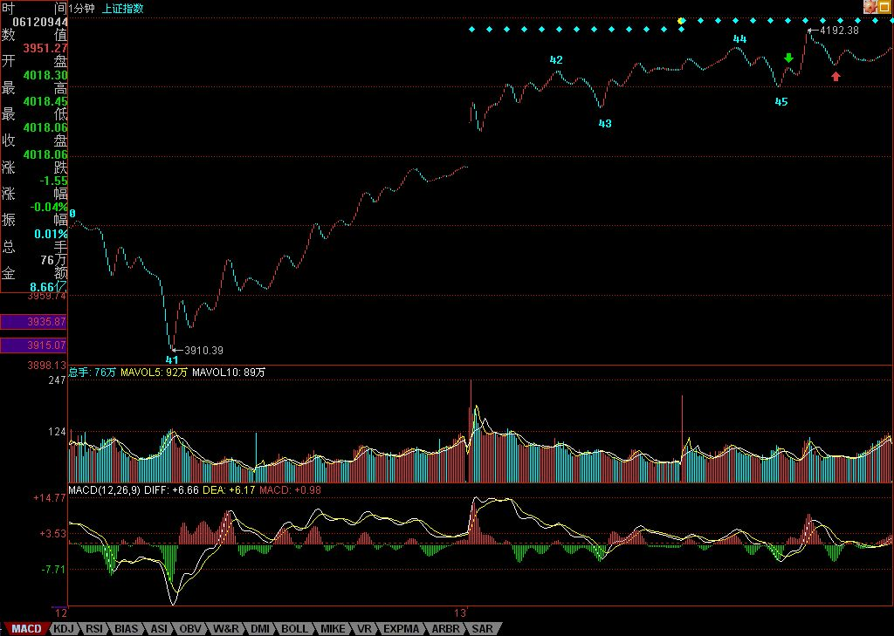

0552 - 教你炒股票59：图解分析示范四¶
日期：(2007-06-14 08:23:43) 分类：[时政经济（缠中说禅经济学）]
出差，必须用三张图才能把落下的走势补上。对于初学分析的人，最难搞的就是分清楚线段，所以，在每张图上，都继续用数字标记每一段线段，从中不难学会究竟线段是如何分的。
有人可能要问，为什么有些线段延续上百点甚至更多，而有些很短。这没什么奇怪的，是否线段，关键看走出来的形态，如果任何低点比前一个高点都高，那么即使这情况无限延续下去，也依然只是一线段，这和幅度没关系。
还有，前后两线段间，不可能是同向的，同是向上或向下不可能构成两个前后相邻的线段。而且，由于线段都至少呈现上下上或下上下，所以线段不存在一条直线走平的可能，由此也知道，为什么一字涨停，无论如何延续，还是低于线段的级别，是最小级别的。
下面，先把三张图列出来，三者之间是连续的，根据上面的标记可以明白。由于K线太多，不能放到一张图上，否则看不清楚。



图一中，20-23构成的1分钟中枢产生延续，29是这中枢的第三类买点。图二中，33是28-31，37是32-35的1分钟中枢第三类买点。图三中，由于红箭头处比绿箭头高，所以不能确定该线段已经完成，还要看后面走势，由此可以知道如何去把握线段的结束：一般来说，线段的结束与大级别的走势段是一样的，在趋势中用背驰来确认，其他情况用盘整背驰来确认，如果有突发性事件，就要看第二类的买卖点，其道理是一样的，只是所用到的级别特别小而已。而对于图三，后面的走势，与42-45的1分钟中枢相关，无非就是中枢震荡直到出现其第三类买卖点。
注意，在前面一课的7-8-9中，由于8下来的低点3994.57与7中最后一个高点3994.21极为相近，如果点数只用到个位的精度，两者就完全一样的，所以在这种情况下可以看成是有重合的，因此可以分成三个线段。当然，如果精度要求到小数点后两位，那么这7-8-9其实可以看成是一个线段。一般来说，如果这两者如此相近，而且8中也带着明显的下上下，所以还是看成三线段比较好。当然，如何看，关系到你事先确认的精度，关键是统一去看，至于按哪种精度，都没有任何实质影响。
有人可能又要问，怎么总是说1分钟的图？其实，看什么图并不重要，从1分钟图看起，只不过意味着这分析的基础有一个1分钟图的精度前提，在这个前提下，当然要看1分钟的图，而这不影响对大级别的分析。例如，1-19，就构成一个5分钟的走势类型，而这走势，最终确认并没有形成两个5分钟的中枢，所以只能算是一个盘整。而从19开始到45，由于41低于32，所以这走势至少有一个5分钟的中枢，但这新的5分钟走势类型并没有最终完成。
对于19-45这个未完成的5分钟走势类型，可以进行仔细的研究。由于29比24低，则22-31也构成一个5分钟中枢，而该中枢，就对应着另一种分解。但无论如何分解，19-45至少是一个未完成5分钟走势类型的结论不变。当然，站在这种分解下，41就是22-31这5分钟中枢的第三类买点。因此，如果41开始的上升最终形成5分钟中枢后不与22-31这5分钟中枢重叠，那么这19开始的走势类型就是5分钟的上涨趋势了。
由上面的分析，对短线的走势就有一个明确的结论，只要关于42-45的1分钟中枢的震荡不出现第三类卖点，或者即使出现，但其后扩张的走势不触及22-31这5分钟中枢震荡区间，那么大盘的震荡就是强势的，即使最终形成30分钟以上级别中枢，也是至少是围绕42-45的1分钟中枢发展而来。否则，大盘将以22-31这5分钟中枢震荡区间为基础扩张出30分钟级别的中枢来，相应的走势就比较弱了。而具体的操作，可以按照中枢震荡的手法，根据自己操作的级别，选择相应的中枢级别进行操作。
附录：
今天的走势没什么可讲的，昨天都已经描述得很清楚了。技术、心理、政策等压力，都需要在这里震荡消化。由于今天没完全补上缺口，因此该位置依然是短线的关键，当然，上面说的42-45的1分钟中枢，已经延伸9段，成为一个5分钟中枢了，后面具体的分析，在上面的文章里已经写了，就不再多说。深圳受到13700点的吸引，短线，能否站稳该线对大盘走向有极大的引导作用。
注意，在中枢震荡中，安全的作法应该是先卖后买、形成节奏。其实这问题很简单，从低位上来的筹码，当发现单边走势结束，进入较大级别震荡时候，其标志就是出现顶背驰或盘整背驰，这就要求减磅，然后等震荡下来，出现底背驰或盘整背驰再回补，这样差价才出来，成本才下降。如果是先买后卖，那唯一可能就是在单边的时候，你的仓位不高，所以才会不卖股票也有资金，这其实是节奏先错了的表现。
当然，这些都需要通过练习才能熟练。而且必须注意，一旦震荡的力度大于前面有可能形成第三类卖点时，就一定要停止回补，等待第三类卖点引发的下跌出现买点时再介入，很多人经常出问题，就是心里先假设一个可能的跌幅，觉得肯定跌不深，这都是大毛病。一定要养成只看图形操作的习惯。
还是那句话，无论是政策、心理、消息等，都是市场的分力，而走势是合力的结果，这才是问题的关键之处。
对不起，今天不能回答各位的问题了，下午有一拨人，晚上有两拨都需要腐败活动的，本ID必须去补课，先下，明早见。
本文评论获取自靠谱的方式，包含疑似禅师的回复数量：[22]
UID:[1215172700] 昵称：缠中说禅 日期：(2007-06-14 08:26:42)
今天解盘下午3点半后附录本文后，先下，再见。
UID:[0] 昵称：[匿名] 哈哈 日期：(2007-06-14 09:00:13)
先顶慢慢看
UID:[0] 昵称：[匿名] CCTV 日期：(2007-06-14 09:08:16)
晕呀！！！地下室！！！
UID:[0] 昵称：[匿名] CCTV 日期：(2007-06-14 09:08:54)
[匿名] 新浪网友 2007-06-14 08:59:07
缠MM讲的那些，跟阻力和支撑差不多理解，不破就会产生买卖点！
-
破了就没有买卖点？？？？
UID:[0] 昵称：[匿名] 3G 日期：(2007-06-14 09:14:52)
醉石 2007-06-14 09:12:28
怎么相册里只有一张图，这上面看不清楚
-
右键找地址打开
UID:[0] 昵称：[匿名] CCTV 日期：(2007-06-14 09:28:44)
注意600839
UID:[0] 昵称：[匿名] CCTV 日期：(2007-06-14 09:59:15)
千万别说我马后炮
--
[匿名] CCTV 2007-06-14 09:28:44
注意600839
UID:[0] 昵称：[匿名] CCTV 日期：(2007-06-14 10:53:21)
妹子的569也太牛啦！！！
UID:[0] 昵称：[匿名] CCTV 日期：(2007-06-14 10:57:28)
[匿名] 雨林木风
2007-06-14 10:38:20
600839看着不错，但是现在进入行吗，？？
请教CCTV
=
买点过啦！！！
UID:[0] 昵称：[匿名] CCTV 日期：(2007-06-14 11:24:26)
你奶奶的，一开盘就推荐买600839，竟然没一个领情的？？？以后不说啦！！！！！
UID:[0] 昵称：[匿名] CCTV 日期：(2007-06-14 11:28:06)
知道大爷为什么要推荐600839吗？？？？难道都没看出9元是第三类买点吗？？？？？
UID:[0] 昵称：[匿名] 哈哈 日期：(2007-06-14 12:27:27)
[匿名] CCTV 2007-06-14 11:28:06
知道大爷为什么要推荐600839吗？？？？难道都没看出9元是第三类买点吗？？？？？
5F图上在9点45的时候9块3附近才是个三买9块哪来的三买？
9块应该是个1F的背驰一买
UID:[0] 昵称：[匿名] CCTV 日期：(2007-06-14 14:04:49)
告诉你们这些傻B吧,其实呢,我就是罗锅,罗锅就是我.
UID:[1215172700] 昵称：缠中说禅 日期：(2007-06-14 15:33:09)
今天的走势没什么可讲的，昨天都已经描述得很清楚了。技术、心理、政策等压力，都需要在这里震荡消化。由于今天没完全补上缺口，因此该位置依然是短线的关键，当然，上面说的42-45的1分钟中枢，已经延伸9段，成为一个5分钟中枢了，后面具体的分析，在上面的文章里已经写了，就不再多说。深圳受到13700点的吸引，短线，能否站稳该线对大盘走向有极大的引导作用。 注意，在中枢震荡中，安全的作法应该是先卖后买、形成节奏。其实这问题很简单，从低位上来的筹码，当发现单边走势结束，进入较大级别震荡时候，其标志就是出现顶背驰或盘整背驰，这就要求减磅，然后等震荡下来，出现底背驰或盘整背驰再回补，这样差价才出来，成本才下降。如果是先买后卖，那唯一可能就是在单边的时候，你的仓位不高，所以才会不卖股票也有资金，这其实是节奏先错了的表现。 当然，这些都需要通过练习才能熟练。而且必须注意，一旦震荡的力度大于前面有可能形成第三类卖点时，就一定要停止回补，等待第三类卖点引发的下跌出现买点时再介入，很多人经常出问题，就是心里先假设一个可能的跌幅，觉得肯定跌不深，这都是大毛病。一定要养成只看图形操作的习惯。 还是那句话，无论是政策、心理、消息等，都是市场的分力，而走势是合力的结果，这才是问题的关键之处。 对不起，今天不能回答各位的问题了，下午有一拨人，晚上有两拨都需要腐败活动的，本ID必须去补课，先下，明早见。
UID:[0] 昵称：[匿名] 悠悠悠哉 日期：(2007-06-14 17:43:54)
老大好
UID:[0] 昵称：[匿名] 3G 日期：(2007-06-14 22:17:12)
[匿名] 新浪网友 2007-06-14 21:59:53
缠中说禅 2007-06-04 16:28:02
请问蓝筹股下跌被套，后市反弹是否也要全部出局？是否明日可以补仓？
==
反弹都要先出来，这种走势，出现V型的可能性微乎其微。
===========================
反弹都要先出来这句话是人的谁都明白是什么意思,只是不想挑明了算了.这种走势，出现V型的可能性微乎其微.而事实上不就是出现V型走势了吗!!!!!!!!!!!事实胜于雄辩,还在这里骂人干什么!!!!!!!!!!!!!真是无聊,无赖加无德.
==
工行、中行这些蓝筹股有V型走势？连上海指数都不能算是V型！上海现在的走势，最多就算是之字型。
UID:[0] 昵称：[匿名] 3G 日期：(2007-06-14 22:32:01)
[匿名] 新浪网友 2007-06-14 22:23:42
[匿名] 3G 2007-06-14 22:17:12
[匿名] 新浪网友 2007-06-14 21:59:53
缠中说禅 2007-06-04 16:28:02
请问蓝筹股下跌被套，后市反弹是否也要全部出局？是否明日可以补仓？
==
反弹都要先出来，这种走势，出现V型的可能性微乎其微。
===========================
反弹都要先出来这句话是人的谁都明白是什么意思,只是不想挑明了算了.这种走势，出现V型的可能性微乎其微.而事实上不就是出现V型走势了吗!!!!!!!!!!!事实胜于雄辩,还在这里骂人干什么!!!!!!!!!!!!!真是无聊,无赖加无德.
==
工行、中行这些蓝筹股有V型走势？连上海指数都不能算是V型！上海现在的走势，最多就算是之字型。
==================
又来一个指鹿为马,真是开了眼了.
、、
工行、中行、中石化不是蓝筹股？你去看看它们的走势，哪里有V型？如果上海是V型走势，为什么会出现多次100多点的跳水？实际上，多数个股，走的都是之字型，弱的股票，还有二次探底。
UID:[0] 昵称：[匿名] 3G 日期：(2007-06-14 22:36:15)
按照通常理解，一个股票从20元没有大反弹地跌到10元，也应该没有大回调地升回20元，这才算V型。如果中途有调整，甚至二次探底，不能算是V型。
UID:[0] 昵称：[匿名] 3G 日期：(2007-06-14 22:48:30)
[匿名] 新浪网友 2007-06-14 22:46:36
[匿名] 3G 2007-06-14 22:36:15
按照通常理解，一个股票从20元没有大反弹地跌到10元，也应该没有大回调地升回20元，这才算V型。如果中途有调整，甚至二次探底，不能算是V型。
=======================
去看看600201 600308 600423 600219 002025 600208 000815 600216 000690等等等等等等等等还有深沪大盘哪个不是V型还之字型,你是哪来的菜鸟?!?!?!?!?!
、、
你连什么是蓝筹股都不知道？按通常的理解，蓝筹股是指超级大盘股，像工行、联通、中石化、广深铁路等。工行、联通、中石化、广深铁路哪一个V型？
UID:[0] 昵称：[匿名] 3G 日期：(2007-06-15 00:03:17)
楼主主张蓝筹反弹出，抄超跌个股的思路事实证明是对的，看看工行、中行、联想、广深铁路等蓝筹这几天的走势就很清楚，等蓝筹股涨起来，行情估计也没了。
UID:[0] 昵称：[匿名] 3G 日期：(2007-06-15 00:14:51)
看看楼主6月4日收盘后的解盘，事实上第二天就出现大反弹
--
“当然，在30日第二卖点走掉的，仓位不重的，目前的任务就是好好把握住本周必然出现的大反弹，注意，如果你技术不好，就要对超跌个股逐步买入，而且必须要有针对性，集中力量，在反弹中，如果还拿着几十只股票，那是操作不过来的。”6月6日楼主解盘“今天就是受制于3858点的第7那点,这在前两天的分析已经说到该点的技术意义,具体可以看当时的分析.深圳强,看能否带动上海,目前,压力不在盘里,而是在盘外,斗争激烈,不能多说.现在,下面这中枢已经形成,就用中枢震荡看.个股向前面说到的一\二线集中的趋势明显,但即使是最好的股票,也不能追高买,一定要在震荡的低点介入.安全,永远都是第一位的.”6月7日楼主解盘“3858的技术意义在今天表现无遗,突破就意味着一个大的中枢在形成,这样是大盘拨乱反正的第一步,这样,大盘就有了一个可以依赖的波动中心,但这中心在形成中.4015点是下一个位置,这位置如果不能突破,大盘还有严重变坏的可能,否则,大盘就有重新挑战1/2线甚至创新高的可能.”楼主的判断是否正确，看看上面就知道。
UID:[0] 昵称：[匿名] 3G 日期：(2007-06-15 00:16:32)
[匿名] 孔子 2007-06-15 00:08:22
老子说句话:
第一,至少该理论对这几天的的走势不能解释 .
第二,那些认为LZ这几天对反弹和蓝筹股判断错了.
第三,你们的老师就认为你们幼儿园还没毕业,你们还说这说那,不是白痴就是SB.
第四,举个例子,有个叫什么长江的东西说,这几天要看年线,你们说是不是白痴,看年线操作那整天还看什么盘啊.那是30-50的操作.
第五,还有那一大群一起愚昧的蠢猪,象疯狗一样的叫.有本事按技术把明天的走势说出来啊,不管你是1分钟还是5分钟的.因为你们老师说后面走时看图就知道了吗?
第六,我们省点力气抽那些SB ,因为他们是由脑偏袒的疯狗。
-------------------
老子说的不错。我再补充一句。LZ的理论只有在大家都相信了，并遵守了才有用。
=
事实证明，大盘的走势从来没超越过楼主的理论。